原文连接:https://www.cnblogs.com/xyfer1018/p/11456697.html
本文介绍使用SpringMVC+Spring+MyBatis三大框架使用Maven快速搭建一个demo，实现数据从数据库中查询返回到页面进行展示的过程。
技术选型：SpringMVC+Spring+MyBatis+MySql+Maven+JSP+IDEA+Tomcat7+JDK1.8+Navicat for MySql
下面开始搭建项目：
一、数据库环境搭建
1、首先使用Navicat for MySql连接MySql数据库，创建一个新的数据库或者使用某一个已经存在的数据库，我这里新创建了一个test数据库，并新建一张user表，建表SQL和插入测试数据的SQL如下：
<!--SQL建表语句-->
CREATE TABLE `user` (
`id` INT (50) NOT NULL,
`name` VARCHAR (100) NOT NULL,
`age` INT (50) NOT NULL,
`address` VARCHAR (200) NOT NULL,
PRIMARY KEY (`id`)
);
<!--插入数据-->
INSERT INTO USER (id,name,age,address)VALUES(1,'小谢',18,'上海市');
INSERT INTO USER (id,name,age,address)VALUES(2,'小尚',18,'上海市');
INSERT INTO USER (id,name,age,address)VALUES(3,'小楠',18,'天津市');
INSERT INTO USER (id,name,age,address)VALUES(4,'小勋',18,'郑州市');
INSERT INTO USER (id,name,age,address)VALUES(5,'小乔',18,'郑州市');
INSERT INTO USER (id,name,age,address)VALUES(6,'小威',18,'郑州市');
INSERT INTO USER (id,name,age,address)VALUES(7,'小欢',18,'武汉市');二、创建一个Maven项目并补全项目目录和相关包名
1、打开IDEA，新建一个项目；
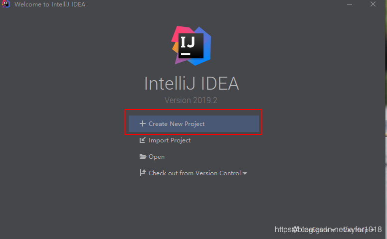
2、新建一个为ssmDemo的Maven项目，使用idea创建骨架，选择webapp进行创建：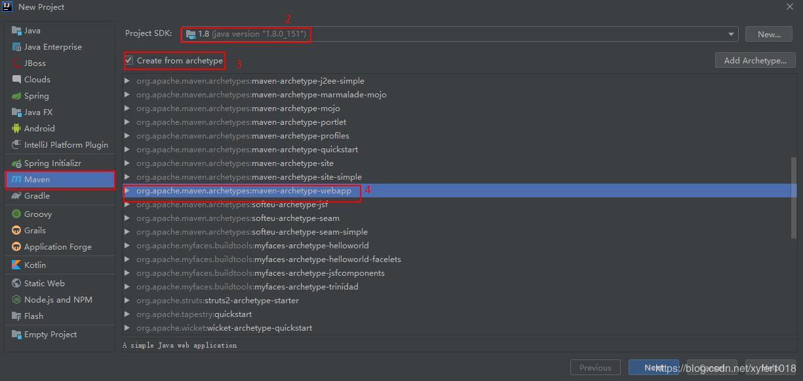
3、项目GroupId和ArtifactId自己定义即可：
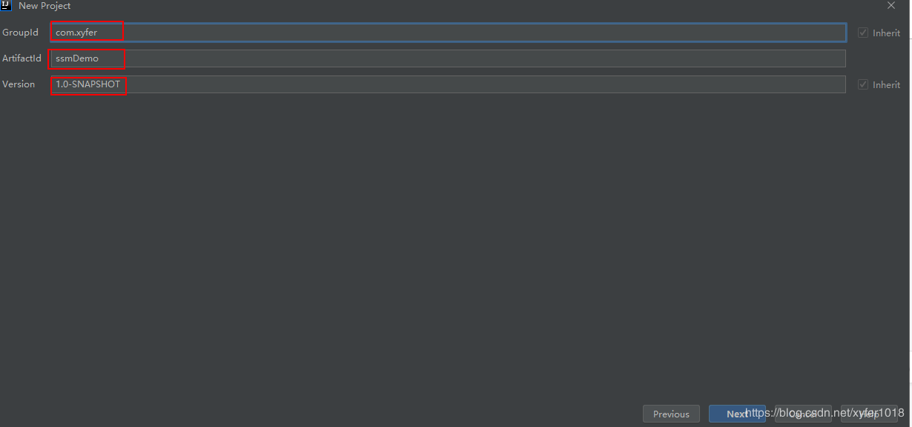
4、配置本地Maven路径：
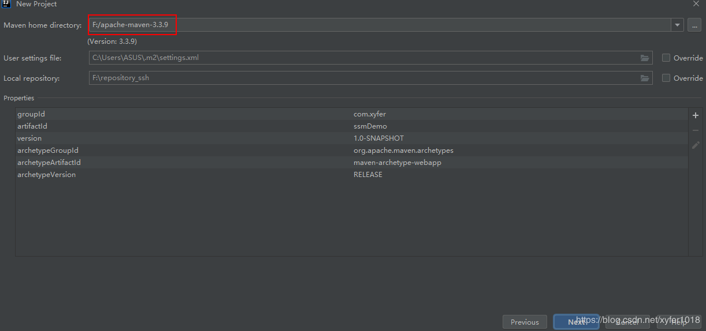
5、配置项目名称和项目路径，点击Finish按钮即可创建项目，等待项目初始化完成：
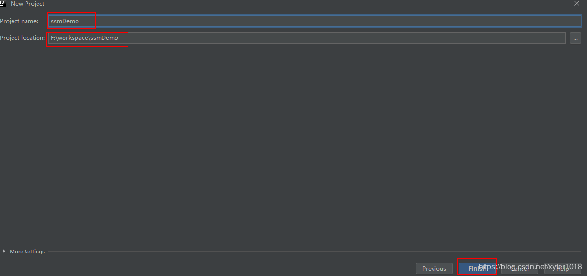
6、项目初始化完成后，项目目录结构如下：
三大框架使用Maven快速搭建整合（实现数据库数据到页面进行展示）5.png)
7、补充项目路径完整，在main文件夹下面创建java和resources文件夹，并作为项目资源文件夹；在src目录下新建test文件夹，并在test文件夹下面创建java和resources文件夹，并作为项目资源文件夹，test文件夹留做单元测试时使用：
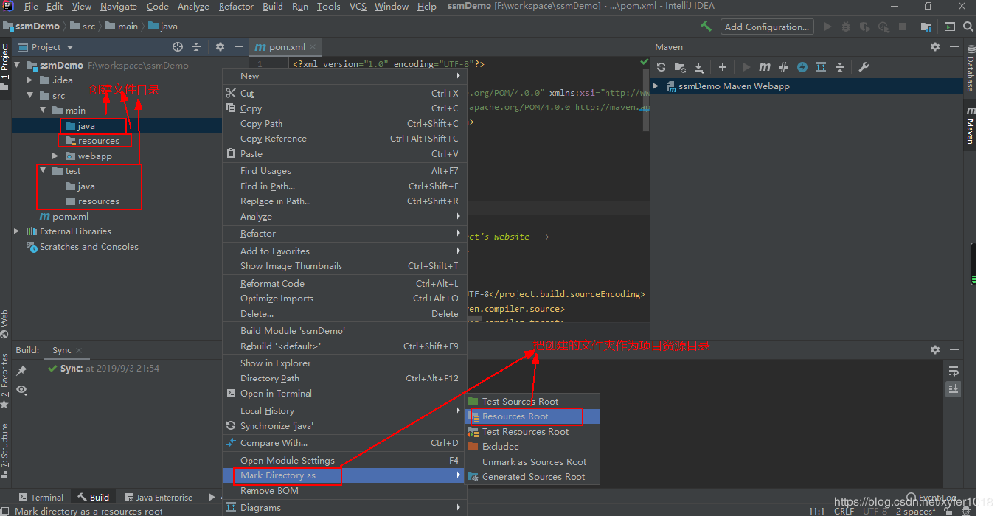
8、在src/java目录下面创建controller、dao、domain、service、service.impl包；
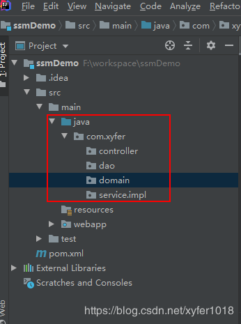
三、SSM配置文件整合
1、pom.xml文件中的相关jar包的坐标，在pom.xml中添加完jar包坐标后Maven会自动下载相关的jar包，SSM整合所需要的jar包说明在注释中已经注明；
<?xml version="1.0" encoding="UTF-8"?>
<project xmlns="http://maven.apache.org/POM/4.0.0" xmlns:xsi="http://www.w3.org/2001/XMLSchema-instance"
xsi:schemaLocation="http://maven.apache.org/POM/4.0.0 http://maven.apache.org/xsd/maven-4.0.0.xsd">
<modelVersion>4.0.0</modelVersion>
<groupId>com.xyfer</groupId>
<artifactId>ssmDemo</artifactId>
<version>1.0-SNAPSHOT</version>
<packaging>war</packaging>
<!-- 统一管理jar包版本 -->
<properties>
<spring.version>5.0.2.RELEASE</spring.version>
<slf4j.version>1.6.6</slf4j.version>
<log4j.version>1.2.12</log4j.version>
<shiro.version>1.2.3</shiro.version>
<mysql.version>5.1.6</mysql.version>
<mybatis.version>3.4.5</mybatis.version>
<spring.security.version>5.0.1.RELEASE</spring.security.version>
<!--编译编码-->
<project.build.sourceEncoding>UTF-8</project.build.sourceEncoding>
</properties>
<dependencies>
<!-- Mybatis 和 mybatis 与 spring 的整合 -->
<dependency>
<groupId>org.mybatis</groupId>
<artifactId>mybatis</artifactId>
<version>${mybatis.version}</version>
</dependency>
<dependency>
<groupId>org.mybatis</groupId>
<artifactId>mybatis-spring</artifactId>
<version>1.3.0</version>
</dependency>
<dependency>
<groupId>org.springframework</groupId>
<artifactId>spring-context</artifactId>
<version>${spring.version}</version>
</dependency>
<dependency>
<groupId>org.springframework</groupId>
<artifactId>spring-context-support</artifactId>
<version>${spring.version}</version>
</dependency>
<dependency>
<groupId>org.springframework</groupId>
<artifactId>spring-aop</artifactId>
<version>${spring.version}</version>
</dependency>
<dependency>
<groupId>org.springframework</groupId>
<artifactId>spring-core</artifactId>
<version>${spring.version}</version>
</dependency>
<dependency>
<groupId>org.springframework</groupId>
<artifactId>spring-web</artifactId>
<version>${spring.version}</version>
</dependency>
<dependency>
<groupId>org.springframework</groupId>
<artifactId>spring-webmvc</artifactId>
<version>${spring.version}</version>
</dependency>
<dependency>
<groupId>org.springframework</groupId>
<artifactId>spring-beans</artifactId>
<version>${spring.version}</version>
</dependency>
<dependency>
<groupId>org.springframework</groupId>
<artifactId>spring-test</artifactId>
<version>${spring.version}</version>
</dependency>
<dependency>
<groupId>org.springframework</groupId>
<artifactId>spring-tx</artifactId>
<version>${spring.version}</version>
</dependency>
<dependency>
<groupId>org.springframework</groupId>
<artifactId>spring-orm</artifactId>
<version>${spring.version}</version>
</dependency>
<dependency>
<groupId>org.aspectj</groupId>
<artifactId>aspectjweaver</artifactId>
<version>1.6.8</version>
</dependency>
<dependency>
<groupId>org.springframework</groupId>
<artifactId>spring-jdbc</artifactId>
<version>${spring.version}</version>
</dependency>
<!--junit测试-->
<dependency>
<groupId>junit</groupId>
<artifactId>junit</artifactId>
<version>4.12</version>
<scope>test</scope>
</dependency>
<!--mysql-->
<dependency>
<groupId>mysql</groupId>
<artifactId>mysql-connector-java</artifactId>
<version>${mysql.version}</version>
</dependency>
<!--servlet-->
<dependency>
<groupId>javax.servlet</groupId>
<artifactId>javax.servlet-api</artifactId>
<version>3.1.0</version>
<scope>provided</scope>
</dependency>
<dependency>
<groupId>javax.servlet.jsp</groupId>
<artifactId>jsp-api</artifactId>
<version>2.0</version>
<scope>provided</scope>
</dependency>
<!--jstl-->
<dependency>
<groupId>jstl</groupId>
<artifactId>jstl</artifactId>
<version>1.2</version>
</dependency>
<!-- log -->
<dependency>
<groupId>log4j</groupId>
<artifactId>log4j</artifactId>
<version>${log4j.version}</version>
</dependency>
<dependency>
<groupId>org.slf4j</groupId>
<artifactId>slf4j-api</artifactId>
<version>${slf4j.version}</version>
</dependency>
<dependency>
<groupId>org.slf4j</groupId>
<artifactId>slf4j-log4j12</artifactId>
<version>${slf4j.version}</version>
</dependency>
<!--alibaba连接池-->
<dependency>
<groupId>com.alibaba</groupId>
<artifactId>druid</artifactId>
<version>1.0.9</version>
</dependency>
</dependencies>
</project>
如果项目名下面有红色波浪线，则是缺少相应的jar包，使用Maven更新jar即可解决：
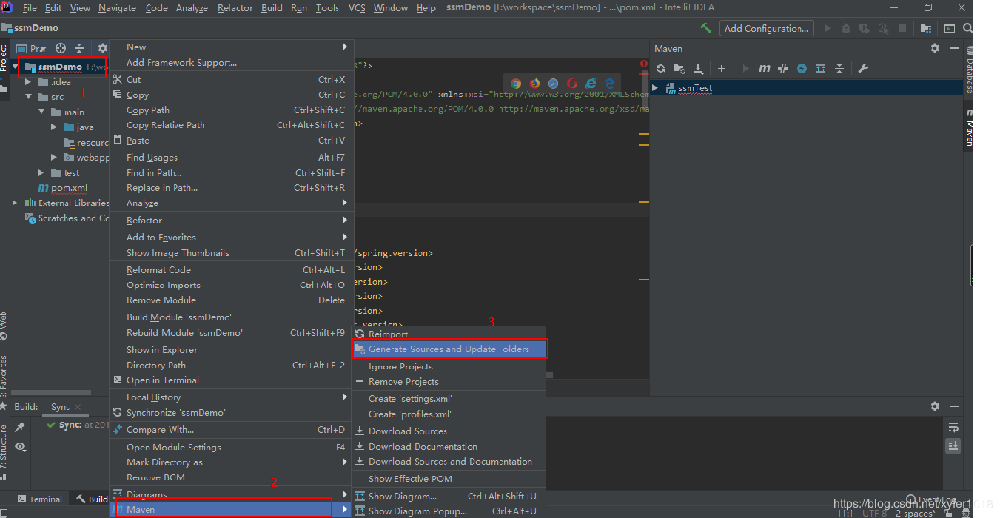
2、在src/resources文件夹下面添加springmvc.xml和applicationContext.xml文件
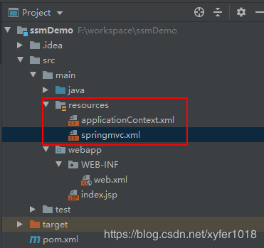
3、在web.xml文件配置DispatcherServlet和spring监听器，加载springmvc.xml和applicationContext.xml文件；
<?xml version="1.0" encoding="UTF-8"?>
<web-app xmlns:xsi="http://www.w3.org/2001/XMLSchema-instance"
xmlns="http://java.sun.com/xml/ns/javaee"
xsi:schemaLocation="http://java.sun.com/xml/ns/javaee
http://java.sun.com/xml/ns/javaee/web-app_2_5.xsd" id="WebApp_ID"
version="2.5">
<!-- 前端控制器 加载springmvc容器 -->
<servlet>
<servlet-name>springmvc</servlet-name>
<servlet-class>org.springframework.web.servlet.DispatcherServlet</servlet-class>
<init-param>
<param-name>contextConfigLocation</param-name>
<param-value>classpath:springmvc.xml</param-value>
</init-param>
</servlet>
<servlet-mapping>
<servlet-name>springmvc</servlet-name>
<url-pattern>*.action</url-pattern>
</servlet-mapping>
<!-- 监听器 加载 spring 容器 -->
<listener>
<listener-class>org.springframework.web.context.ContextLoaderListener</listener-class>
</listener>
<context-param>
<param-name>contextConfigLocation</param-name>
<param-value>classpath*:applicationContext.xml</param-value>
</context-param>
</web-app>4、在springmvc.xml中配置controller包扫描和视图解析器；
<?xml version="1.0" encoding="UTF-8"?>
<beans xmlns="http://www.springframework.org/schema/beans"
xmlns:xsi="http://www.w3.org/2001/XMLSchema-instance"
xmlns:p="http://www.springframework.org/schema/p"
xmlns:context="http://www.springframework.org/schema/context"
xmlns:mvc="http://www.springframework.org/schema/mvc"
xsi:schemaLocation="http://www.springframework.org/schema/beans
http://www.springframework.org/schema/beans/spring-beans-4.2.xsd
http://www.springframework.org/schema/mvc
http://www.springframework.org/schema/mvc/spring-mvc-4.2.xsd
http://www.springframework.org/schema/context
http://www.springframework.org/schema/context/spring-context-4.2.xsd">
<!--配置controller注解扫描-->
<context:component-scan base-package="com.xyfer.controller"></context:component-scan>
<!-- 配置视图解析器的前缀和后缀 -->
<bean class="org.springframework.web.servlet.view.InternalResourceViewResolver">
<property name="prefix" value="/WEB-INF/jsp/"></property>
<property name="suffix" value=".jsp"></property>
</bean>
</beans>5、在applicationContext.xml配置数据库连接信息，dao和service包扫描；
<?xml version="1.0" encoding="UTF-8"?>
<beans xmlns="http://www.springframework.org/schema/beans"
xmlns:xsi="http://www.w3.org/2001/XMLSchema-instance"
xmlns:context="http://www.springframework.org/schema/context"
xmlns:aop="http://www.springframework.org/schema/aop"
xmlns:tx="http://www.springframework.org/schema/tx"
xmlns:mvc="http://www.springframework.org/schema/mvc"
xsi:schemaLocation="http://www.springframework.org/schema/beans
http://www.springframework.org/schema/beans/spring-beans.xsd
http://www.springframework.org/schema/context
http://www.springframework.org/schema/context/spring-context.xsd
http://www.springframework.org/schema/aop
http://www.springframework.org/schema/aop/spring-aop.xsd
http://www.springframework.org/schema/tx
http://www.springframework.org/schema/tx/spring-tx.xsd
http://www.springframework.org/schema/mvc
http://www.springframework.org/schema/mvc/spring-mvc.xsd">
<!-- 数据库连接池 -->
<bean id="dataSource" class="com.alibaba.druid.pool.DruidDataSource">
<!-- 驱动 -->
<property name="driverClassName" value="com.mysql.jdbc.Driver" />
<!-- url -->
<property name="url" value="jdbc:mysql://localhost:3306/test" />
<!-- 用户名 -->
<property name="username" value="root" />
<!-- 密码 -->
<property name="password" value="root" />
</bean>
<!-- mapper 配置 -->
<!-- 让 spring 管理 sqlsessionfactory 使用mybatis和spring整合包中的 -->
<bean id="sqlSessionFactory"
class="org.mybatis.spring.SqlSessionFactoryBean">
<!-- 数据库连接池 -->
<property name="dataSource" ref="dataSource" />
<!--pojo位置-->
<property name="typeAliasesPackage" value="com.xyfer.domain"></property>
<!--mapper文件位置-->
<property name="mapperLocations" value="classpath:com.xyfer.dao/*Mapper.xml"/>
</bean>
<!-- mapper 扫描器 ：用来产生代理对象-->
<bean class="org.mybatis.spring.mapper.MapperScannerConfigurer">
<property name="basePackage" value="com.xyfer.dao"></property>
</bean>
<!--配置注解扫描dao代替上面包名的配置-->
<!--<context:component-scan base-package="com.xyfer.dao"/>-->
<!--配置注解扫描service-->
<context:component-scan base-package="com.xyfer.service"/>
</beans>6、日志文件log4j.properties放在src/resources文件夹下面；
### direct log messages to stdout ###
log4j.appender.stdout=org.apache.log4j.ConsoleAppender
log4j.appender.stdout.Target=System.out
log4j.appender.stdout.layout=org.apache.log4j.PatternLayout
log4j.appender.stdout.layout.ConversionPattern=%d{ABSOLUTE} %5
p %c{1}:%L - %m%n
### set log levels - for more verbose logging change 'info' to
'debug' ###
#在开发阶段日志级别使用 debug
log4j.rootLogger=debug, stdout
### 在日志中输出 sql 的输入参数 ###
log4j.logger.org.hibernate.type=TRACE至此，SSM(SpringMVC+Spring+MyBatis)三大框架整合搭建，配置文件已经整合完成。
下面开始创建java类和接口，以实现数据库数据到前端jsp页面的展示：
四、实体类和controller、service、dao接口的创建；
1、根据数据库中user表字段和实体类的映射关系，在src/main/java/com/xyfer/domain下面创建实体类User.java；
package com.xyfer.domain;
public class User {
public int id;
public String name;
public int age;
public String address;
public int getId() {
return id;
}
public void setId(int id) {
this.id = id;
}
public String getName() {
return name;
}
public void setName(String name) {
this.name = name;
}
public int getAge() {
return age;
}
public void setAge(int age) {
this.age = age;
}
public String getAddress() {
return address;
}
public void setAddress(String address) {
this.address = address;
}
@Override
public String toString() {
return "User{" +
"id=" + id +
", name='" + name + '\'' +
", age=" + age +
", address='" + address + '\'' +
'}';
}
}2、在src/main/java/com/xyfer/dao下面创建UserDao，并创建一个findUserById的方法；
package com.xyfer.dao;
import com.xyfer.domain.User;
import org.springframework.stereotype.Component;
import org.springframework.stereotype.Repository;
/**
* dao层
*/
@Repository
public interface UserDao {
/**
* 根据id查询user
* @param id
* @return
*/
public User findUserById(int id);
}在applicationContext.xml中配置了mapper文件的位置：
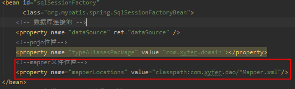
所以在src/main/resources下面创建com.xyfer.dao的包，并创建UserDaoMapper.xml文件，注意mapper文件中的namespace的配置，并书写id问getUserById的SQL语句
<?xml version="1.0" encoding="UTF-8" ?>
<!DOCTYPE mapper PUBLIC "-//mybatis.org//DTD Mapper 3.0//EN"
"http://mybatis.org/dtd/mybatis-3-mapper.dtd" >
<mapper namespace="com.xyfer.dao.UserDao">
<select id="findUserById" parameterType="int" resultType="com.xyfer.domain.User">
select * from user where id=#{id}
</select>
</mapper>3、在src/main/java/com/xyfer/service中创建UserService接口，并在src/main/java/com/xyfer/service/impl中创建实现类UserServiceImpl；
UserService接口：
package com.xyfer.service;
import com.xyfer.domain.User;
import org.springframework.stereotype.Service;
import org.springframework.transaction.annotation.Transactional;
/**
* UserService层
*/
public interface UserService {
/**
* 根据id查询user
* @param id
* @return
*/
public User findUserById(int id);
}实现类UserServiceImpl：
package com.xyfer.service.impl;
import com.xyfer.dao.UserDao;
import com.xyfer.domain.User;
import com.xyfer.service.UserService;
import org.springframework.beans.factory.annotation.Autowired;
import org.springframework.stereotype.Service;
import org.springframework.transaction.annotation.Transactional;
/**
* UserServiceImpl service实现类
*/
@Service
@Transactional
public class UserServiceImpl implements UserService {
@Autowired
public UserDao userDao;
/**
* 根据id查询user
* @param id
* @return
*/
public User findUserById(int id) {
return userDao.findUserById(id);
}
}4、在src/main/java/com/xyfer/controller中创建UserController：
package com.xyfer.controller;
import com.xyfer.domain.User;
import com.xyfer.service.UserService;
import org.springframework.beans.factory.annotation.Autowired;
import org.springframework.stereotype.Controller;
import org.springframework.ui.Model;
import org.springframework.web.bind.annotation.RequestMapping;
/**
* controller层
*/
@Controller
@RequestMapping("/xyfer")
public class UserController {
@Autowired
public UserService userService;
/**
* 根据id查询user
* @param id
* @return
*/
@RequestMapping("/findUserById")
public String findUserById(int id, Model model){
User user = userService.findUserById(id);
model.addAttribute("user",user);
return "userInfo";
};
}五、前端页面展示；
由于在springmvc.xml中配置的视图解析器如图所示,并且controller控制器返回的是"userInfo"：
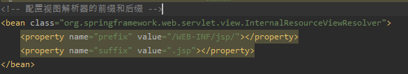
所以要在src/main/webapp/WEB-INF下面创建一个jsp文件夹，并创建一个userInfo.jsp文件；
<%@ page language="java" contentType="text/html; charset=UTF-8"
pageEncoding="UTF-8"%>
<%@ taglib uri="http://java.sun.com/jsp/jstl/core" prefix="c" %>
<%@ taglib uri="http://java.sun.com/jsp/jstl/fmt" prefix="fmt"%>
<!DOCTYPE html PUBLIC "-//W3C//DTD HTML 4.01 Transitional//EN"
"http://www.w3.org/TR/html4/loose.dtd">
<html>
<head>
<meta http-equiv="Content-Type" content="text/html; charset=UTF-8">
<title>user信息</title>
</head>
<body>
<form>
<table width="100%" border=1>
<tr>
<td>姓名</td>
<td> ${user.name } </td>
</tr>
<tr>
<td>年龄</td>
<td> ${user.age } </td>
</tr>
<tr>
<td>地址</td>
<td>${user.address} </textarea>
</td>
</tr>
</table>
</form>
</body>
</html>至此，已经写好所有项目需要的类和接口，项目路径如图所示：
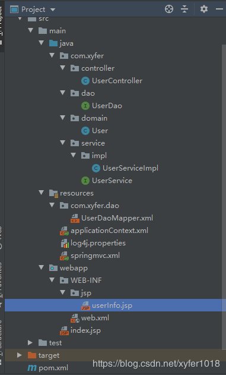
六、发布部署项目并通过浏览器访问，得到预期的从数据库中返回的数据；
1、打开部署项目页面：
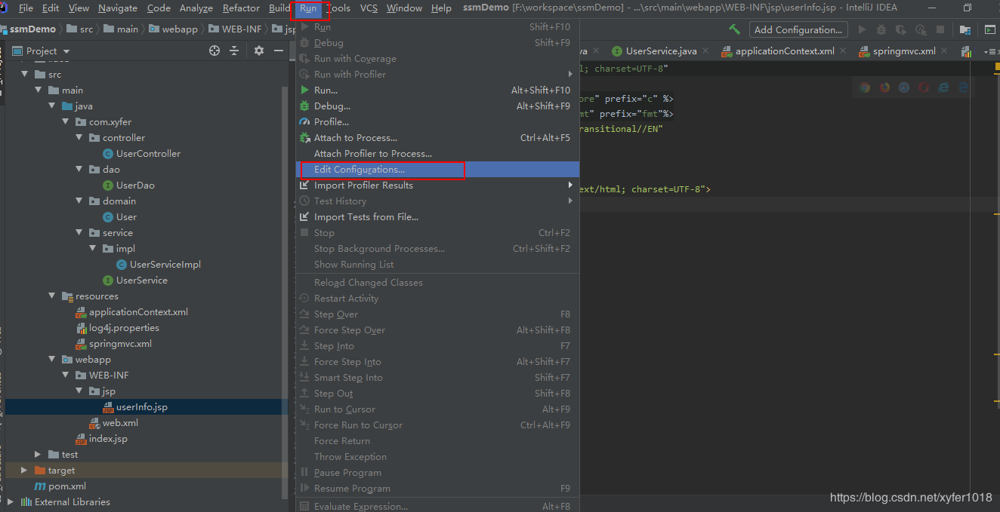
2、添加一个tomcat服务；
三大框架使用Maven快速搭建整合（实现数据库数据到页面进行展示）14.png)
3、配置Server和Deployment
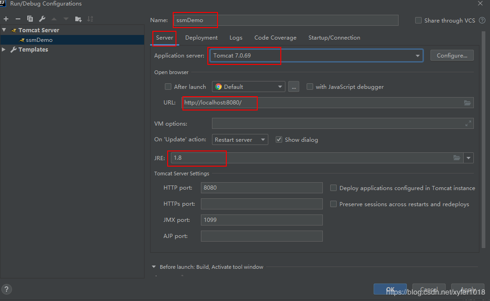
选择Artifact
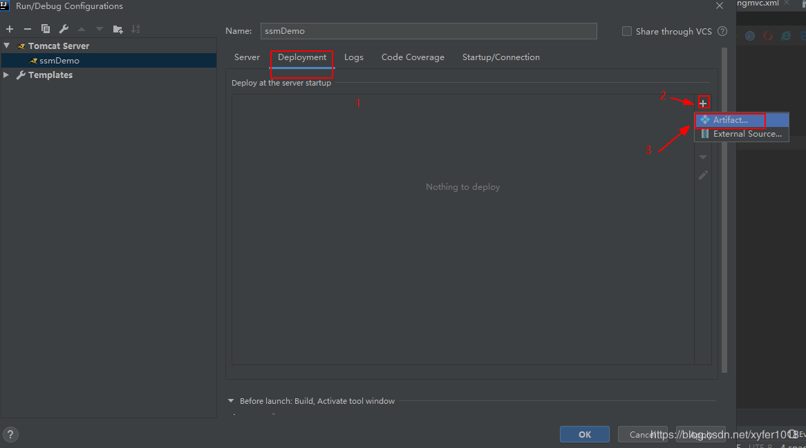
选择war包
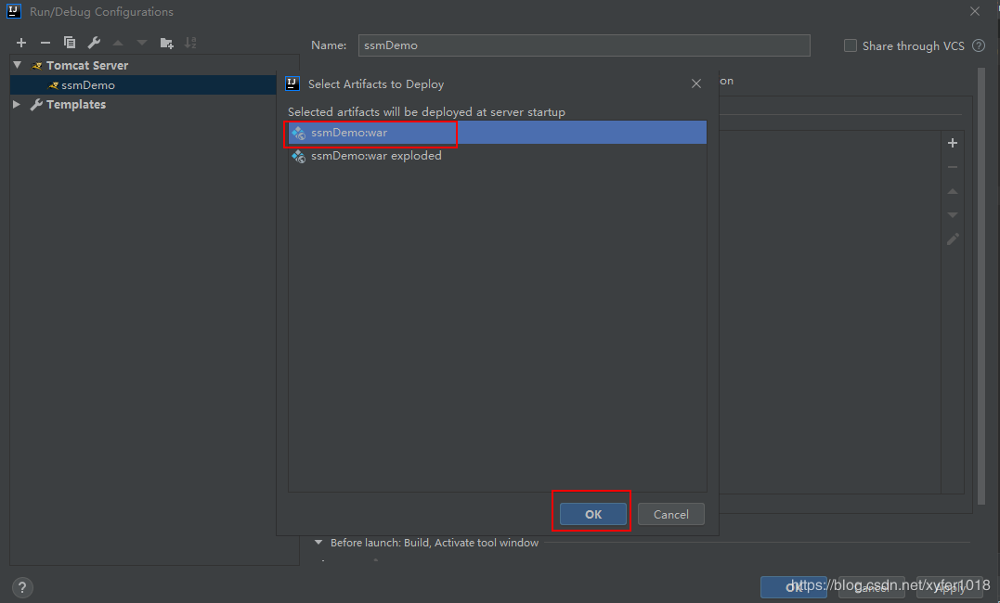
配置访问路径：
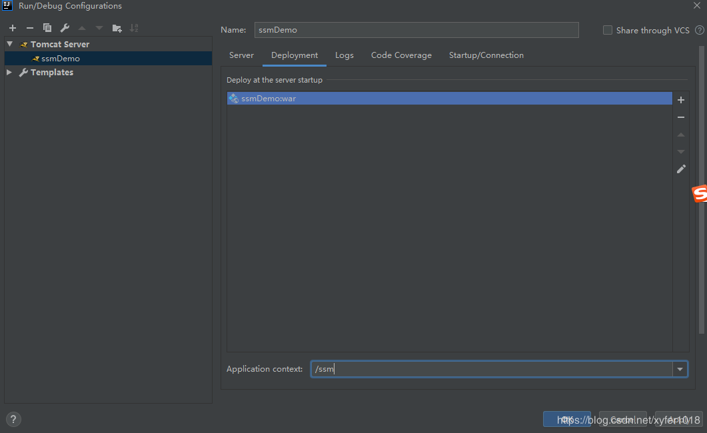
在浏览器中输入访问地址：http://localhost:8080/ssm/，回车，出现如下页面，则项目发布部署成功：
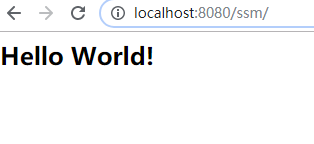
下面通过地址带参数发送请求，查询我们想要的数据：
地址如下：http://localhost:8080/ssm/xyfer/findUserById.action?id=1
DispatcherServlet拦截action请求，回车后的页面跳转后得到userInfo页面：
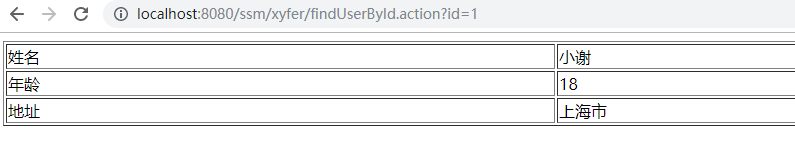
浏览器出现这个页面时，证明我们已经从数据库中查询到id值为1的user数据，并在前端页面展示user的信息。
此时，我们已经完成了SSM(SpringMVC+Spring+MyBatis)三大框架使用Maven快速搭建整合并实现数据库数据到页面进行展示。